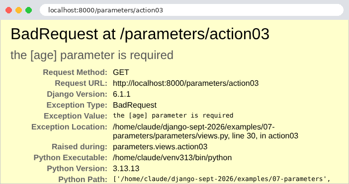
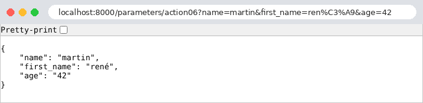
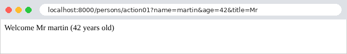

3. O modelo da view
Uma view precisa das informações enviadas pelo navegador: os parâmetros da URL ([?name=martin&age=42]), os campos de formulário, o corpo da requisição e, às vezes, um cabeçalho da requisição. O curso original chama todas essas informações de modelo da ação; aqui, vamos chamá-las de modelo da view. Este capítulo mostra como uma view do [Django] obtém essas informações, as converte para o tipo correto e as valida. Esse processo se chama data binding.
O [Django] dá acesso às informações da requisição por meio do objeto [HttpRequest] (Exemplo 05), na forma de strings. Para convertê-las e validá-las, ele tem uma única ferramenta central: os formulários do módulo [django.forms]. Um formulário do [Django] é uma classe que descreve os dados esperados, campo por campo: cada campo sabe converter a string recebida para o seu tipo de dado (um inteiro, uma data, uma lista etc.) e verificar restrições (“obrigatório”, “um inteiro entre 0 e 150” etc.). Apesar do nome, os formulários não se limitam a formulários HTML: eles também validam os parâmetros de uma URL ou um documento JSON. Primeiro leremos os parâmetros manualmente (exemplo 07) e depois usaremos formulários para tratar sua conversão e validação (exemplos 08 a 12). No próximo capítulo, esses mesmos formulários também serão exibidos em HTML.
Atenção à terminologia: a palavra “modelo” tem um significado específico no [Django], referindo-se às classes do ORM (Capítulo 7). O modelo de uma view, como definido neste capítulo, é o que ela recebe da requisição. Vamos organizar as classes que o descrevem em arquivos [viewmodels.py], nunca em [models.py], que é reservado ao ORM.
Os exemplos 07 a 12 são executados da mesma forma que os do capítulo anterior: abra um terminal no diretório do exemplo, com o ambiente virtual ativado ([python manage.py runserver]); [Ctrl-C] interrompe o servidor. A maioria usa o middleware [ReadableJson] do Exemplo 03, resultando em um JSON legível. Só comentaremos seus arquivos de configuração quando eles introduzirem algo novo.
3.1. Exemplo 07: os parâmetros da URL
Os parâmetros da URL são a parte que segue o [?]: [?name=martin&age=42]. Essa parte é chamada de query string. Cada parâmetro é um par [name=value]; os pares são separados por [&]. Views da aplicação [parameters]:
- Linha 12: o atributo [GET] da requisição contém os parâmetros da URL. Seu nome é enganoso: ele existe independentemente do método da requisição, inclusive para uma requisição POST cuja URL tenha parâmetros. É um objeto [QueryDict], um dicionário cujo método [get] retorna o valor de um parâmetro — já decodificado — ou [None] se ele estiver ausente;
- Linha 13: a view exibe o valor e seu tipo: [type(name)] retorna a classe do valor, e [__name__] retorna o nome dessa classe. Um valor obtido da URL é sempre uma string ([str]);
- linhas 26–36: um parâmetro obrigatório e uma conversão manual que distingue os dois erros possíveis. O operador [is] verifica a identidade; [text is None] é a maneira correta de verificar a ausência de um valor. [raise BadRequest(message)] encerra a view com uma resposta 400 (Bad Request: a requisição é inválida), assim como [Http404] encerrava a view com uma resposta 404 (exemplo 03). A função [int] converte uma string em um inteiro e lança a exceção [ValueError] se a string não for um inteiro: o bloco [try] / [except] captura essa exceção para retornar o nosso próprio erro;
- linha 42: o segundo parâmetro de [get] é um valor padrão, usado se o parâmetro estiver ausente. Esse é um caso típico para o número de página em uma lista. Observe que o valor padrão é uma string, ["1"], assim como seria o valor recebido;
- linha 50: não há obrigação de dar à variável [Python] o mesmo nome do parâmetro da URL. Os mecanismos de busca costumam usar um parâmetro curto, como [q] (query);
- linha 57: [dict()] retorna todos os parâmetros da URL em um dicionário [Python] comum, que a view converte em JSON (exemplo 03).
Vamos testar cada view com o [curl]. Um parâmetro presente e, depois, ausente:
As aspas em torno da URL são necessárias em um terminal: sem elas, o shell interpretaria [&] (que executa um comando em segundo plano no [Linux]) e [?]. O valor [None], quando inserido em uma f-string, torna-se o texto [None]. Um valor que contenha espaços ou caracteres especiais deve ser codificado para a URL: um espaço torna-se [%20] (ou [+]), e [&] torna-se [%26] (caso contrário, separaria dois parâmetros). O navegador faz isso automaticamente; com o [curl], é preciso escrevê-lo explicitamente. O [Django] decodifica o valor antes que a view o leia:
Um parâmetro que existe, mas está vazio ([?name=]), retorna uma string vazia, e não [None]: a view pode distinguir os dois casos. O valor da idade, seguido da conversão manual — bem-sucedida, sem parâmetro e com falha:
O valor [42] recebido pela view 02 é uma string; o valor da view 03, após a conversão, é um inteiro. A função [int] tolera espaços: [?age=%2042] (“42” precedido de um espaço) também retorna 42. Os dois erros produzem uma resposta 400. No modo de depuração, esta é a página de erro do [Django], exibindo a nossa mensagem:

O valor padrão e o parâmetro renomeado:
Todos os parâmetros de uma vez. O parâmetro [name] aparece duas vezes:
O parâmetro [name] mantém apenas o seu valor mais recente no dicionário. Veremos no Exemplo 10 que [request.GET], por outro lado, manteve todos eles. A idade continuou sendo uma string (["42"], entre aspas no JSON): nenhuma conversão foi solicitada. Em um navegador (aqui, o [Chromium]), o JSON é exibido exatamente como o servidor o formatou; a caixa de seleção “Pretty-print” o indentaria se ele ainda não estivesse indentado. A barra de endereços também mostra a codificação de caracteres acentuados na URL ([é] torna-se [%C3%A9], com seus dois bytes em [UTF-8]):

Este primeiro exemplo ilustra as limitações da abordagem manual: para cada parâmetro, é preciso escrever a leitura, a conversão e o tratamento de valores ausentes e de erros. Com dez parâmetros, o código da view ficaria soterrado sob essas verificações, e não haveria como expressar as regras (“uma string de 2 a 20 caracteres”). É melhor descrever o que se espera e deixar o framework verificar. Esse é o objetivo do exemplo seguinte.
3.2. Exemplo 08: um modelo de view descrito por uma classe
Um modelo de view pode ser descrito por uma classe: um formulário do [Django], com um campo para cada parâmetro esperado. O tipo do campo especifica como converter a string recebida, e seus parâmetros especificam as restrições que ela deve satisfazer. O [Django] oferece cerca de trinta tipos de campo: [CharField] (uma string), [IntegerField], [DecimalField], [FloatField], [BooleanField], [DateField], [EmailField], [URLField], [ChoiceField] (um valor de uma lista), [MultipleChoiceField], [FileField]...
3.2.1. O modelo: persons/viewmodels.py
- Linha 4: importa o módulo [forms] do [Django]. Essa é a prática padrão: os campos se chamarão [forms.CharField], [forms.IntegerField]...;
- linha 9: um formulário é uma classe que herda de [forms.Form];
- linhas 11–17: os campos, escritos como atributos da classe (não do objeto: são definidos no corpo da classe, fora de qualquer método). O [Django] os descobre examinando a classe; sua ordem é a mesma da declaração. Todos os campos são obrigatórios por padrão ([required=True]): um parâmetro ausente ou vazio é um erro;
- linha 11: o nome deve ter entre 2 e 20 caracteres. Um [CharField] também remove os espaços que cercam o valor (parâmetro [strip], padrão [True]) antes de validá-lo;
- linha 13: a idade é um inteiro entre 0 e 150. O campo converte a string em um inteiro — é a função da view 03 do exemplo 07, em uma única linha;
- linha 15: o tratamento deve ser um dos três valores listados. As opções são pares (valor, rótulo): o rótulo será usado quando o campo for exibido em uma página (Exemplo 18);
- linha 17: o endereço de e-mail é opcional ([required=False]); se informado, deve ser válido.
Este modelo descreve os dados esperados; ele não contém instruções de validação. Isso é chamado de estilo declarativo. Um formulário é usado em três etapas: ele é criado com os dados recebidos ([PersonModel(request.GET)]: um formulário “vinculado” a dados); sua validade é verificada ([is_valid()]), o que dispara a conversão e a validação de cada campo; em seguida, leem-se os valores convertidos ([cleaned_data], um dicionário) ou os erros ([errors], um dicionário que associa cada campo com erro à lista de suas mensagens). Cada campo é convertido e validado independentemente dos outros: todos os erros são detectados de uma só vez.
3.2.2. A vinculação: persons/binding.py
O [Symfony] tinha um atributo, [#[MapQueryString]], que construía e validava o modelo antes de chamar a action. O [Django] não tem nada parecido para views baseadas em função. Mas sabemos, pelo Exemplo 02, que um decorador pode envolver uma view para agir antes dela: vamos escrever um decorador que constrói o modelo a partir dos parâmetros da URL, o valida e o passa à view.
- Linhas 8–11: uma exceção “personalizada”: uma classe que herda da classe [Exception] do [Python]. Seu construtor chama o construtor da classe pai ([super().__init__(...)], com a mensagem da exceção) e depois armazena o formulário em um atributo: quem capturar a exceção encontrará ali os erros;
- Linhas 17–28: um decorador parametrizado. [@from_url(PersonModel)] é executado em duas etapas: [from_url(PersonModel)] retorna a função [decorator], que é aplicada à view e, por sua vez, retorna a função [wrapper], que substitui a view. As funções definidas dentro de outra função conservam as variáveis dela ([model_class], [view]) mesmo depois de terminarem o seu trabalho: isso se chama closure;
- Linha 20: [@wraps(view)], do módulo [functools], dá ao wrapper o nome e a documentação da view: as mensagens de erro e as ferramentas do [Django] continuarão se referindo a [action01], e não a [wrapper];
- Linha 21: o wrapper recebe o que o [Django] passa à view: a requisição, seguida dos parâmetros da rota, que ele não conhece de antemão. [*args] recebe os parâmetros passados por posição (em uma tupla), enquanto [**kwargs] recebe os passados por nome (em um dicionário); na chamada da linha 26, [*args] e [**kwargs] os repassam como estão;
- Linhas 22–24: o formulário é vinculado aos parâmetros da URL e validado; se for inválido, o wrapper lança uma exceção e a view nunca é chamada — assim, ela não precisa se preocupar com dados inválidos;
- linha 26: caso contrário, a view é chamada, com um parâmetro adicional: os valores convertidos e validados.
3.2.3. A view: persons/views.py
- Linhas 14–15: dois decorators são empilhados; o mais próximo da função é aplicado primeiro. [require_GET] envolve, portanto, o wrapper de [from_url]: o método HTTP é verificado antes dos parâmetros;
- linha 16: a view recebe o modelo validado, na forma de um dicionário;
- linhas 17–21: a view retorna os parâmetros recebidos como estão, seguidos do modelo e do tipo da idade, para ilustrar a diferença.
3.2.4. Tratamento de erros: config/middleware.py
Quem trata a exceção [InvalidModel]? Sem nenhuma outra ação, o próprio [Django] a trata com uma resposta 500: para ele, é apenas mais uma exceção. Queremos uma resposta de erro em JSON, com código de status 400, em nosso próprio formato. Esse é o papel do middleware:
- linhas 11–20: o middleware [ReadableJson] do Exemplo 03;
- linhas 25–30: um segundo middleware, cujo método [__call__] simplesmente passa a requisição ao componente seguinte da cadeia;
- linhas 35–42: o método [process_exception]. Além de [__call__], um módulo de middleware pode ter métodos que o [Django] chama em pontos específicos do processamento (o capítulo sobre o ciclo de vida os abordará todos). [process_exception] é chamado quando uma exceção é lançada pela view. Ele retorna uma resposta — que substitui a página de erro gerada pelo [Django] — ou retorna [None], permitindo que o [Django] trate a exceção da maneira habitual. Declarado na configuração [MIDDLEWARE], o middleware se aplica a todas as views da aplicação: toda view que valida um modelo se beneficia dele, sem precisar escrever uma única linha de código de tratamento de erros;
- linha 36: se não for um erro de validação, o middleware não faz nada;
- linhas 39–41: a lista de erros, na forma de dicionários, é calculada por meio de uma list comprehension com dois laços: [for] — para cada campo com erro, para cada mensagem associada a esse campo. [items()] percorre um dicionário em pares (chave, valor);
- linha 42: uma resposta JSON, com código de status 400. Ela então sobe pela cadeia de middleware e passa por [ReadableJson] (linhas 18–20 do arquivo [config/settings.py]).
3.2.5. Execução
Um modelo válido:
Os parâmetros recebidos são strings; o modelo contém a idade como um inteiro (sem aspas no JSON), e o endereço ausente é a string vazia (o valor “vazio” de um [CharField] ou de um [EmailField]; o de um [IntegerField] opcional seria [None]). Um nome cercado por espaços ([%20]) e um endereço presente:
Os espaços que cercavam o nome foram removidos pelo campo: a view recebe o valor limpo ([cleaned_data]). Um nome composto somente de espaços ficaria, portanto, vazio e seria rejeitado como ausente. Agora sem nenhum parâmetro: os três campos obrigatórios estão ausentes.
As mensagens estão em inglês. As mensagens dos formulários são escritas em inglês no código do [Django], mas passam pelo seu mecanismo de tradução, e o [Django] vem com as traduções delas em cerca de cem idiomas: com a configuração [LANGUAGE_CODE = "fr"], elas estariam em francês. Todos os nossos exemplos usam a configuração [LANGUAGE_CODE = "en"], desde o Exemplo 01. Quatro campos inválidos de uma só vez:
Todos os erros são informados de uma só vez, permitindo que o usuário corrija tudo de uma vez. Por fim, uma idade que não é um número:
Mais uma vez, os quatro erros são informados: a falha na conversão da idade é um erro do campo [age], como os demais. Isso difere do [Symfony], em que o curso demonstrou que uma falha na conversão impedia totalmente a validação, porque impedia a construção do objeto: um formulário do [Django], por outro lado, converte e valida cada campo separadamente.
3.3. Exemplo 09: validação realizada pela view
No Exemplo 08, um modelo inválido interrompe a view, e o middleware da aplicação responde. Isso é conveniente para uma API, cujos clientes são programas que esperam uma resposta de erro padronizada. Mas uma página web costuma preferir reexibir o formulário com mensagens de erro: nesse caso, a view deve decidir o que fazer com um modelo inválido. Ela usa o formulário diretamente, sem um decorador. O exemplo não tem mais middleware:
3.3.1. O modelo: persons/viewmodels.py
O modelo tem os campos do Exemplo 08, mas desta vez com mensagens de erro próprias:
- linha 9: um dicionário, definido de uma vez por todas e compartilhado pelos três campos obrigatórios. Por convenção, uma variável de módulo escrita em maiúsculas é uma constante;
- linhas 13–18: o parâmetro [error_messages] de um campo substitui suas mensagens pelas nossas. Cada tipo de erro tem um código: [required] (campo ausente ou vazio), [invalid] (o valor não pode ser convertido: uma idade [abc]), [invalid_choice] (valor fora da lista), [min_length], [max_length], [min_value], [max_value]... O dicionário associa uma mensagem a cada código. As mensagens não listadas no dicionário são as do [Django];
- linha 16: o operador [|] mescla dois dicionários: o resultado contém as chaves de ambos (se houver uma chave em comum, prevalece a da direita). Assim, “age” tem duas mensagens nossas.
As mensagens do [Django] nem sempre são adequadas; acabamos de ver como substituí-las, campo por campo. Para substituí-las em toda a aplicação, fornecemos traduções (veja o capítulo sobre internacionalização): são essas traduções — e não [error_messages] — que devem ser usadas em uma aplicação multilíngue.
3.3.2. A view: persons/views.py
- Linha 14: a view cria o formulário, vinculado aos parâmetros da URL;
- linha 16: [is_valid()] converte e valida cada campo e armazena os eventuais erros em [person_input.errors]. Ele não lança nenhuma exceção: a view decide por conta própria o que fazer em seguida;
- Linhas 19–22: os erros, campo por campo, são colocados cada um dentro de uma tag [<li>]. [format_html_join] gera um trecho de HTML para cada elemento de uma sequência de valores (aqui, pares (campo, mensagem) produzidos por uma expressão geradora), com base em um template de texto, [<li>{}: {}</li>]: cada [{}] recebe um valor do par. [format_html] faz o mesmo para um único trecho. Essas duas funções, do módulo [django.utils.html], têm uma propriedade essencial: os valores inseridos são escapados;
- linhas 23–25: em caso de sucesso, é exibida uma mensagem de boas-vindas, junto com os valores convertidos.
Escapar um valor significa substituir os caracteres que têm significado em HTML ([<], [>], [&], ["], [']) por suas entidades ([<], [>]...): eles serão exibidos como estão, em vez de interpretados. Sem essa precaução, um usuário poderia digitar um “nome” contendo HTML, ou até mesmo [JavaScript], que seria executado no navegador de qualquer pessoa que visualizasse a página. Essa é a vulnerabilidade de segurança mais comum na web: a injeção de script (XSS, cross-site scripting). Uma f-string, por outro lado, não escapa nada: [HttpResponse(f"Welcome {name}")] seria vulnerável. [format_html] retorna um texto marcado como “seguro” (um objeto [SafeString]): as partes já escapadas não são escapadas uma segunda vez quando inseridas em outra ([items], linha 22). Na próxima seção, os templates do [Django] farão esse escape automaticamente para qualquer valor inserido em uma página.
Uma entrada válida, seguida de uma entrada que contém quatro erros:


As mensagens estão em inglês: as do [Django] (o nome, o endereço) e as nossas (a idade, o tratamento). A resposta bruta à segunda consulta — a de um nome contendo HTML — e a resposta a uma consulta sem nome, com uma idade alta demais:
O nome [<b>martin</b>] (codificado como [%3Cb%3E...] na URL) é exibido como está, sem ficar em negrito: suas tags foram neutralizadas. Observe que, desta vez, a resposta tem o código de status 200: a view optou por gerar uma página normal contendo os erros.
3.4. Exemplo 10: parâmetros múltiplos
O mesmo parâmetro pode aparecer várias vezes em uma URL: [?color=red&color=green]. É isso que um navegador envia para um grupo de caixas de seleção com o mesmo nome ou para uma lista de seleção múltipla (veja o próximo capítulo). As views da aplicação [arrays]:
- linhas 11–13: [get] retorna o último valor do parâmetro. A view também retorna, para comparação, a string bruta de parâmetros como enviada pelo navegador;
- linhas 19–21: [getlist] retorna todos os valores do parâmetro em uma lista; a lista fica vazia se o parâmetro estiver ausente. Essa é a razão de ser da classe [QueryDict]: um dicionário que associa uma lista de valores a cada chave e cujo método [get] retorna apenas o último valor, para o caso mais comum;
- Linhas 26–29: o modelo de view 03, um formulário de um único campo. Um [MultipleChoiceField] recebe uma lista de valores e verifica se cada um pertence à lista de opções; como é obrigatório, exige pelo menos um valor. Sua mensagem [invalid_choice] contém o marcador [%(value)s], que o [Django] substituirá pelo valor incorreto (essa é a sintaxe das strings de formatação do [Python] que usam o operador [%]). Uma classe pode ser definida no arquivo de views; ela não precisa de um módulo próprio;
- linhas 34–38: o formulário é vinculado aos parâmetros da URL: ele próprio lê todos os valores do parâmetro [color], porque seu campo é um campo de múltiplos valores. A view retorna as cores recebidas, o resultado da validação e os eventuais erros do campo ([errors.get("color", [])]: a lista de mensagens, ou uma lista vazia se o campo não tiver erros).
Os resultados:
Em HTML, basta dar às caixas de seleção de um grupo o mesmo nome (os formulários do [Django] farão isso por nós; veja o exemplo 18). Essa é uma diferença em relação ao [PHP], que os leitores do curso de [Symfony] encontraram: o [PHP] mantém apenas o último valor de um parâmetro repetido, a menos que seu nome termine com colchetes ([color[]]). O [Django], assim como o [Flask], o [Spring MVC] ou o [ASP.NET Core], mantém todos os valores — sem colchetes. Na verdade, para o sistema, os colchetes são apenas dois caracteres do nome: [?color[]=red] define um parâmetro chamado [color[]], que [getlist("color")] não enxerga.
Validação: bem-sucedida no primeiro caso, depois com falha por uma cor desconhecida e, por fim, por uma lista vazia:
A mensagem de erro identifica o valor incorreto, [black].
3.5. Exemplo 11: parâmetros de uma requisição POST
Os exemplos anteriores usaram requisições GET, cujos parâmetros estão contidos na URL. Uma requisição POST transporta seus dados no corpo, de duas formas principais:
- os campos de um formulário HTML: o corpo tem a mesma sintaxe de uma query string ([name=martin&age=42]), e seu tipo (cabeçalho [Content-Type]) é [application/x-www-form-urlencoded] (ou [multipart/form-data], para um formulário que envia arquivos);
- um documento JSON, enviado por um programa ([JavaScript] em uma página, cliente de uma API...): o tipo é [application/json].
As views da aplicação [post]:
- linhas 15, 27, 41, 48: todas as views aceitam apenas o método POST (decorador [require_POST]);
- linha 18: o cabeçalho [Content-Type] da requisição;
- linhas 19–21: o atributo [POST] da requisição contém os campos do corpo de um formulário, em um [QueryDict], como [GET] (exemplos 07 e 10): [get], [getlist], [dict]... Ele fica vazio para qualquer outro tipo de corpo, em particular um corpo JSON;
- Linha 30: [content_type] é o tipo do corpo, lido do cabeçalho [Content-Type] (sem o eventual conjunto de caracteres que o siga). Um corpo que não seja do tipo JSON é rejeitado com o erro 415 (Unsupported Media Type);
- linhas 32–35: o [Django] não decodifica um corpo JSON: o atributo [body] contém o corpo bruto, em forma de bytes, que a função [json.loads] desserializa: o texto JSON torna-se um dicionário (ou uma lista, um número...). Um JSON malformado lança a exceção [json.JSONDecodeError], que é capturada pelo bloco [try] / [except] ; [as e] atribui um nome à exceção para incluir sua mensagem na nossa, em uma resposta 400;
- linhas 41–44: um único campo, lido dos dados do corpo, seja um formulário ou um documento (JSON): essa é a tarefa da função [body_data], descrita abaixo;
- linhas 48–51: o decorador [from_body] é a contrapartida, para o corpo da requisição, do decorador [from_url] do Exemplo 08: ele constrói um [PersonModel] (o formulário do Exemplo 08) a partir dos campos do formulário ou do documento JSON e o valida. Um modelo inválido lança a exceção [InvalidModel], que o middleware [ValidationErrors] do Exemplo 08 converte em uma resposta 400.
O arquivo [post/binding.py]:
- Linhas 18–27: dados do corpo, em um dicionário: o documento JSON decodificado ou os campos do formulário ([request.POST]). Um documento JSON que não seja um objeto (uma lista, um número) não pode preencher um formulário: isso resulta em um erro 400;
- Linhas 32–41: o decorador, idêntico ao do Exemplo 08, exceto pela fonte de dados (linha 36). Um formulário do [Django] aceita qualquer dicionário, não apenas um [QueryDict]: é isso que lhe permite validar também um documento JSON.
Para uma requisição POST, um ponto merece destaque: o [Django] não exige nada mais para aceitá-la, porque nossos exemplos ainda não incluem o middleware de proteção anti-CSRF (Exemplo 18). Com o [curl], a opção [-d] (data) envia um corpo; a requisição passa então a ser uma requisição POST, do tipo [application/x-www-form-urlencoded], a menos que a opção [-H] (header) especifique um tipo diferente. A opção [-X POST] define explicitamente o método (aqui ela é opcional). Os campos de um formulário, incluindo um campo repetido:
Um corpo JSON, que contém um inteiro e um array:
As aspas do JSON são precedidas por uma [\] para impedir que a string do comando termine; no [Linux] e no [macOS], você também pode envolver o JSON em apóstrofos: [-d '{"name": "martin"}']. Ao contrário dos campos de formulário, o JSON carrega tipos de dados: a idade já é um inteiro. Um corpo que não é JSON, seguido de um JSON malformado:
A segunda resposta é a página de erro do [Django], que exibe a nossa mensagem: [malformed JSON: Expecting property name enclosed in double quotes: line 1 column 2 (char 1)] (em JSON, os nomes de propriedades devem estar entre aspas). Um único campo, primeiro em formulário, depois em JSON, seguido da mesma URL requisitada com GET:
A URL existe, mas não para o método GET: o [Django] retorna uma resposta 405 (Method Not Allowed), e seu cabeçalho [Allow] lista os métodos aceitos (exemplo 02). Por fim, o modelo vinculado ao corpo da requisição, primeiro por meio de um formulário válido, depois de um inválido e, finalmente, por meio de um documento JSON:
A última requisição envia a idade como uma string (["42"], entre aspas), enquanto o modelo espera um inteiro: o formulário a converte, assim como converte os campos de um formulário HTML. Um formulário do [Django] foi concebido para dados de texto; ele também aceita um valor já convertido (o inteiro 42 do JSON). Uma API com exigências de tipo mais rígidas usaria, em vez disso, a extensão [Django REST framework], cujos serializers distinguem a string ["42"] do inteiro 42.
3.6. Exemplo 12: binding e validação personalizados
Os conversores e campos padrão nem sempre bastam. Este exemplo mostra três maneiras de estender o binding e a validação:
- um conversor de rota “personalizado”: uma data em formato francês, [23-09-2026], no caminho da URL, fornecida à view como um objeto;
- um middleware que fornece à view informações que não vêm da URL, mas de um cabeçalho HTTP;
- um validador "personalizado" (sem espaços) e a conversão de uma data [dd/mm/yyyy] por meio de um método do formulário.
3.6.1. Um objeto vinculado a um parâmetro de rota: bindings/converters.py
No Exemplo 02, vimos os conversores do [Django]: [int], [str], [slug], [uuid], [path]. A aplicação pode escrever os seus próprios. Vamos escrever um para uma data no formato francês, representada pela classe [DayFr]:
- linhas 7–9: uma data class imutável, cujo único atributo é uma data, um objeto [date] do módulo [datetime] da biblioteca padrão;
- Linhas 13–20: um método de classe, marcado com [@classmethod]: ele é chamado na classe, [DayFr.from_url("23-09-2026")], e recebe a própria classe como primeiro parâmetro, chamado por convenção de [cls] . Ele cria um objeto [DayFr] a partir do texto do caminho, ou retorna [None] se o texto for inválido. [datetime.strptime] analisa uma string segundo um formato específico: [%d] para o dia, [%m] para o mês e [%Y] para o ano com quatro dígitos; ela retorna um objeto [datetime] (uma data e hora), do qual [.date()] mantém apenas a data. Ela lança uma exceção [ValueError] se o texto não seguir o formato ou se a data não existir: 31 de fevereiro é rejeitado. [cls(...)] cria um objeto da classe;
- linhas 23–24: a operação inversa. O método [__str__] especifica como converter o objeto em string ([str(day)], ou uma f-string); [strftime] escreve uma data em um formato específico;
- linhas 28–41: o conversor, uma classe com um atributo e dois métodos, que o [Django] reconhece pelos nomes (nenhuma classe pai é exigida: o [Python] exige apenas que um objeto tenha os atributos corretos — isso é conhecido como “duck typing”);
- linha 30: [regex] é a expressão regular com a qual o segmento do caminho deve corresponder: [[0-9]] denota um dígito, [{2}] denota a repetição do padrão anterior: dois dígitos, um hífen, dois dígitos, um hífen, quatro dígitos. Um segmento com formato diferente não corresponde à rota. O prefixo [r] na string bruta (raw string) instrui o [Python] a não interpretar as barras invertidas, que são comuns em expressões regulares;
- linhas 33–37: [to_python] converte o texto do segmento em um valor passado à view. Se ele lançar [ValueError], o [Django] considera que a rota não corresponde e tenta as rotas seguintes; no fim, ocorre um erro 404;
- linhas 40–41: [to_url] faz o oposto, enquanto [reverse] gera a URL de uma rota (exemplo 04) a partir de um objeto [DayFr].
O conversor deve ser registrado com um nome antes de ser usado pela primeira vez em uma rota. É o que faz o arquivo [config/urls.py]:
- Linha 9: [register_converter] registra o conversor com o nome [dayfr]: as rotas agora podem escrever [<dayfr:day>], assim como [<int:id>].
3.6.2. Um parâmetro fornecido por um middleware: config/middleware.py
Para fornecer a uma view uma informação calculada a partir da requisição, também é possível calculá-la em um middleware (exemplo 03), que a insere na requisição antes que ela chegue à view:
- linha 4: uma função do módulo de tradução do [Django];
- linhas 14–21: o middleware é executado antes da view, já que seu código precede a chamada a [self.get_response];
- Linha 18: o cabeçalho de requisição [Accept-Language] indica os idiomas do usuário, em ordem de preferência: [fr-FR,fr;q=0.9,en;q=0.8] (o coeficiente [q] mede a preferência, em uma escala de 0 a 1). [get_language_from_request] seleciona, entre os idiomas aceitos pela aplicação (a configuração [LANGUAGES], linhas 24–27 do arquivo [config/settings.py]), aquele que o usuário prefere; se não houver cabeçalho, ou se nenhum for adequado, usa o idioma indicado na configuração [LANGUAGE_CODE]. O middleware armazena o idioma em um novo atributo da requisição, [language]: um objeto [Python] pode receber atributos a qualquer momento. É assim que o próprio [Django] fornece informações às views: [request.user] (o usuário autenticado), [request.session] (a sessão), [request.LANGUAGE_CODE] (o idioma)... são adicionados por middlewares;
- linhas 26–38: a resposta a uma validação que falhou. Queremos que ela seja diferente da do Exemplo 08: a mensagem do primeiro erro, em texto simples, com código de status 400. [errors.values()] percorre as listas de mensagens; [iter] retorna um iterador sobre essas listas, do qual [next] obtém a primeira; [[0]] refere-se à primeira mensagem dessa lista.
O middleware é executado para todas as requisições. Um middleware que deve agir apenas em certas views verifica ele mesmo o caminho da requisição ([request.path]) ou, em seu método [process_view] (veja o capítulo sobre o ciclo de vida), a view que está prestes a ser chamada. Para uma única view, um decorador é mais apropriado, como [from_url]. Quanto à view, ela encontrará a informação na requisição (veja Views).
3.6.3. Um validador “personalizado” e uma conversão: validators.py e viewmodels.py
Um validador é uma função que recebe o valor de um campo — já convertido — e lança a exceção [ValidationError] se ele for inválido:
- Linhas 8–10: o operador [in] verifica a presença de um texto em uma string. [ValidationError] é a exceção que os próprios campos do [Django] lançam; seu parâmetro [code] ([space]) permitiria a um formulário substituir a mensagem com [error_messages], de forma semelhante aos códigos do [Django] (exemplo 09). O validador só é chamado se o valor estiver presente: a ausência de valor é tratada pelo parâmetro [required] do campo.
O validador é usado pelo template de pesquisa:
- linha 13: o parâmetro [validators] de um campo é a lista de seus validadores “personalizados”, chamados depois das verificações próprias do campo. O [Django] fornece validadores predefinidos no módulo [django.core.validators]: [RegexValidator], [MinValueValidator], [URLValidator]...;
- linha 15: a data é recebida como string. Um [DateField] poderia tê-la convertido sozinho (usando [input_formats=["%d/%m/%Y"]]); fazemos a conversão manualmente para demonstrar outra maneira de fazê-lo;
- linhas 19–26: um método chamado [clean_] seguido do nome de um campo é chamado por [is_valid()] depois das verificações do campo. Ele obtém o valor do campo em [self.cleaned_data]; seu valor de retorno substitui esse valor, e uma [ValidationError] lançada por ele se torna um erro do campo. Aqui, ele converte a string em uma data: a view receberá uma data válida. Essa é a maneira mais comum de adicionar uma regra ou uma conversão personalizada a um campo; para uma regra que se aplica a vários campos, sobrescreve-se o método [clean] do formulário (Exemplo 19).
3.6.4. Views: bindings/views.py
- Linhas 14–19: a view recebe o objeto [DayFr] gerado pelo conversor. Ela exibe a data no formato internacional ([isoformat()]: [2026-09-23]) e a URL da rota, gerada por [reverse] (exemplo 04), com o objeto [DayFr] como parâmetro: [Django] o converte em texto usando o método [to_url] do conversor. A URL é relativa ao site ([/examples/...]); [request.build_absolute_uri(url)] a tornaria absoluta. Duas f-strings escritas lado a lado, entre parênteses, são concatenadas pelo [Python] em uma única string;
- linhas 25–26: a view lê a informação calculada pelo middleware [DetectLanguage]. [a if condition else b] é a expressão condicional do [Python];
- linhas 30–34: o modelo da consulta, vinculado aos parâmetros da URL e validado pelo decorador do Exemplo 08 (arquivo [bindings/binding.py]). A view recebe apenas modelos válidos; a data já é um objeto [date] ou [None] .
3.6.5. Execução
O objeto associado ao parâmetro da rota:
A data é exibida no formato internacional, mas a URL construída por [reverse] voltou ao formato francês. 31 de fevereiro não existe: 404, porque nosso conversor rejeitou o segmento. Uma data em formato internacional, [2026-09-23], não corresponde ao padrão descrito pela expressão regular: também 404, sem que [to_python] chegue a ser chamado. Nos dois casos, a página de erro do [Django] lista as rotas, incluindo [examples/ schedule/<dayfr:day>].
O middleware. A opção [-H] do [curl] define o cabeçalho [Accept-Language]:
[fr-FR] não está na lista de idiomas da aplicação, mas o [Django] pode recorrer ao idioma genérico, [fr]. O alemão não está incluído de forma alguma, e o [curl] não envia o cabeçalho [Accept-Language]: em ambos os casos, o idioma usado é o definido nas configurações ([LANGUAGE_CODE]). O capítulo sobre internacionalização tratará dessa questão, com o usuário escolhendo o idioma.
O validador “interno” e a conversão de data:
A segunda requisição contém dois erros; o middleware retorna apenas o primeiro, o relativo à palavra-chave. Sem nenhum parâmetro, o modelo é válido: seus dois campos são opcionais.
3.6.6. Conclusão
Vamos resumir os métodos de que uma view dispõe para obter seu modelo:
Origem | Métodos |
Parâmetros da rota | os parâmetros da view, que têm os mesmos nomes; convertidos por um conversor ([<int:id>]); um conversor “personalizado” ([regex], [to_python], [to_url], [register_converter]) os vincula a um objeto |
Parâmetros da URL | [request.GET.get(...)], [getlist], [dict]; um parâmetro repetido mantém todos os seus valores |
Campos de um formulário POST | [request.POST.get(...)], [getlist], [dict] |
JSON no corpo | [json.loads(request.body)], após a validação de [request.content_type] |
Modelo descrito por uma classe | um formulário [Django] ([forms.Form]): conversão e validação de cada campo ([is_valid], [cleaned_data], [errors]); um decorador para fazer isso antes da view |
Cabeçalhos | [request.headers.get(...)], e funções que os analisam, como [get_language_from_request] |
Validação | parâmetros do campo ([required], [min_length], [min_value]...); validadores “personalizados” ([validators], [ValidationError]); os métodos [clean_<field>] e [clean] |
Mensagens | o idioma [LANGUAGE_CODE], traduções do [Django]; [error_messages] para um campo |
Erros comuns | um middleware e seu método [process_exception] |
Informação calculada | um middleware, que a adiciona à requisição ([request.language]) |
Os formulários HTML, por outro lado, exigem mais do que validação: eles precisam ser exibidos, reexibidos com os dados digitados pelo usuário e os eventuais erros, e protegidos contra requisições forjadas. Os formulários do [Django] fazem tudo isso com a ajuda de templates. Esse é o assunto do próximo capítulo.